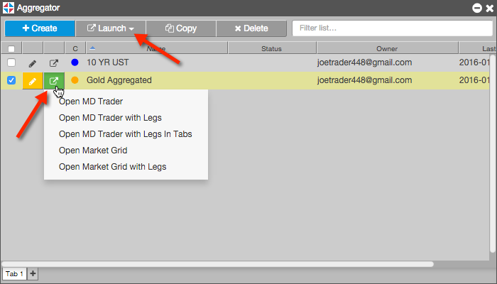
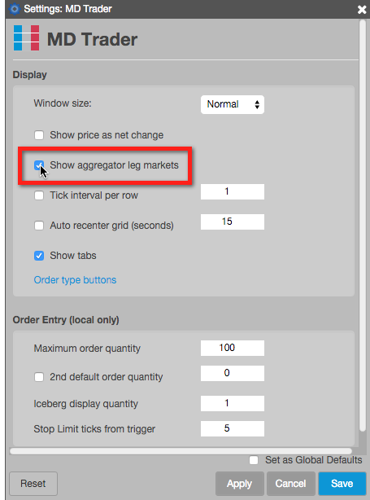

To launch an aggregated instrument:
Click the LAUNCH button or the launch icon for the selected instrument.

Select one of the following:
Note: Launching an aggregated instrument makes the it available in the Market Explorer for trading as a single instrument.
When launching an aggregated instrument in a single MD Trader, you can display the columns for the leg markets in addition to the Bids and Asks columns for the aggregated instrument by enabling the Show Aggregator leg markets setting.
Right-click in the MD Trader order pane and click Settings in the context menu. In the Settings: MD Trader screen, check the Show Aggregator leg markets setting. This setting is unchecked by default (leg markets are not displayed).
